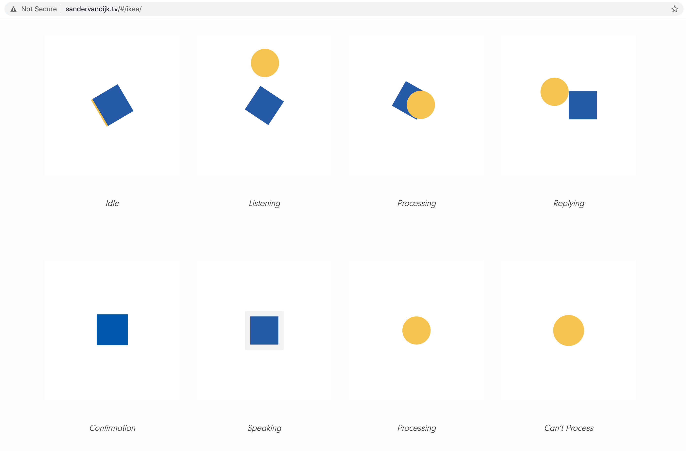
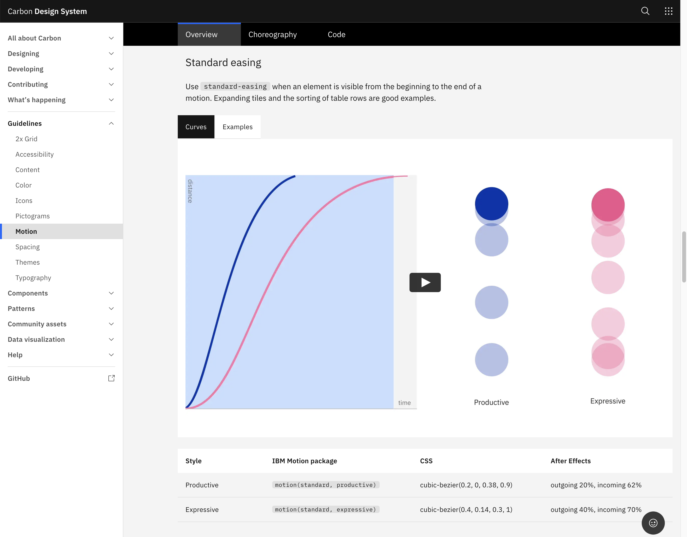
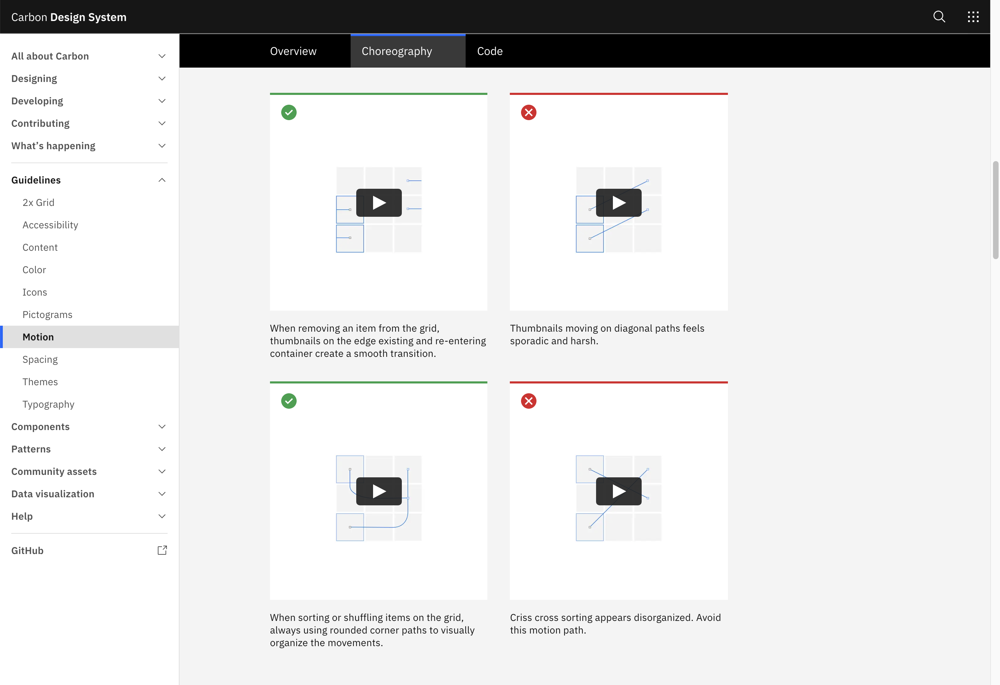
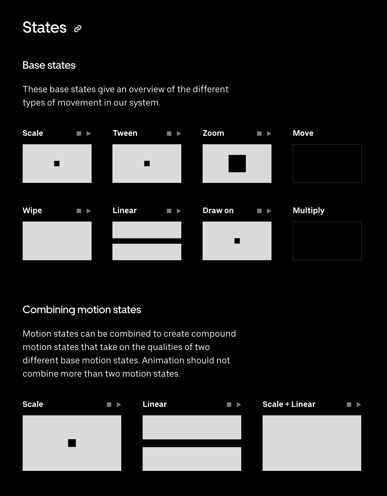
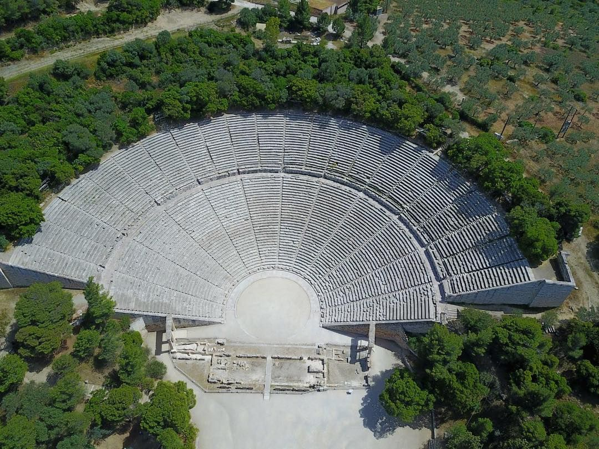
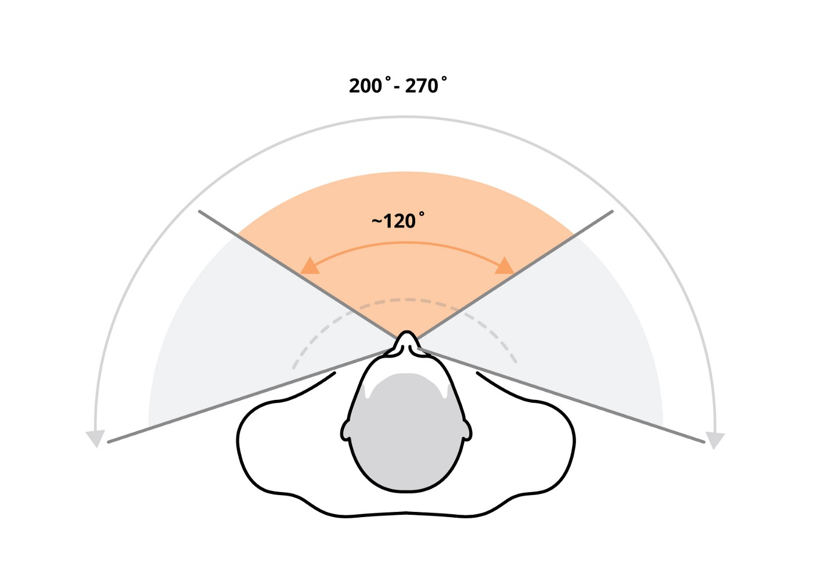
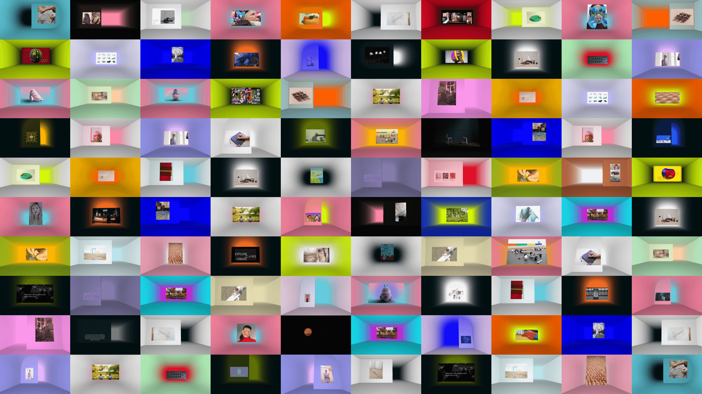
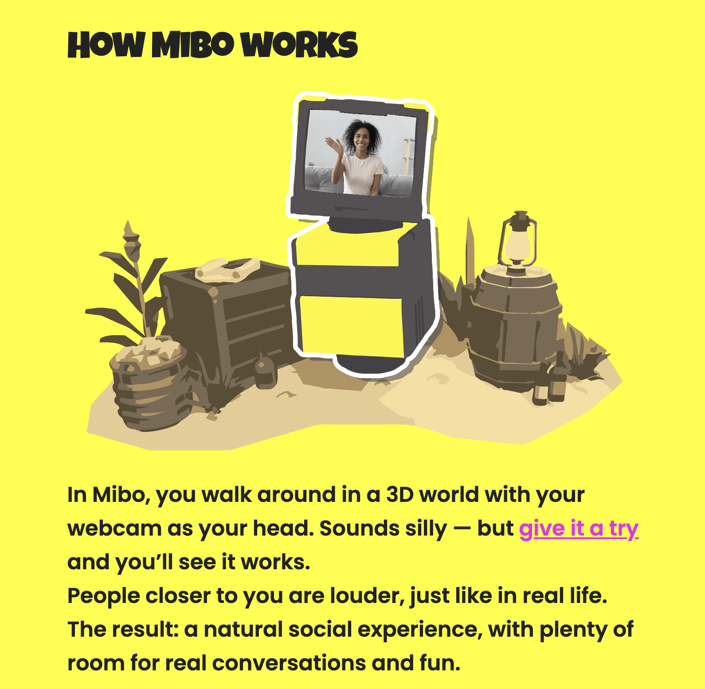
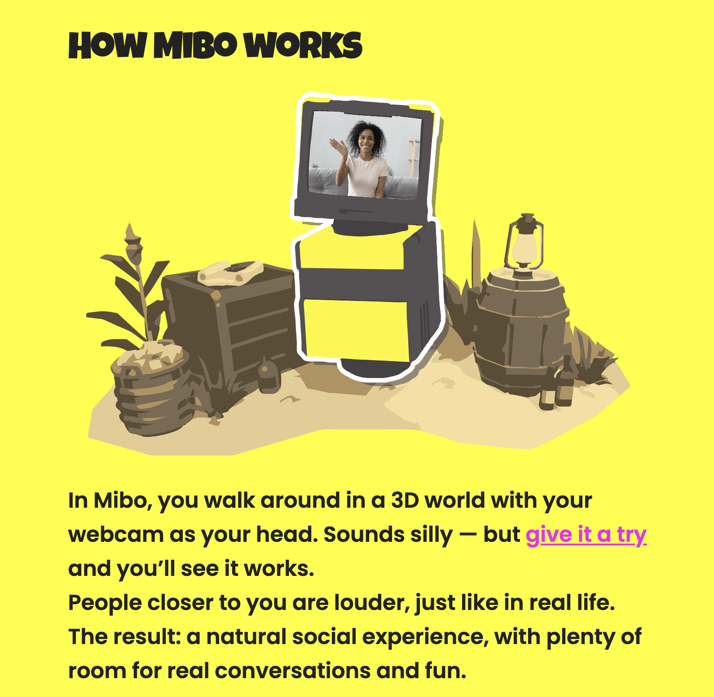

The Design of Sensorially Holistic Experiences
accompanying visuals and diagrams
A list of key terms and definitions
Research question
How can the application of computer & 3D graphics, motion and extended realities be used by graphic designers to create immersive experiences through sensorially holistic brand systems?
Sub-questions
How can the design of brand identities be more sensorially holistic? What new properties of the brand can be brought to life by engaging more senses than just the visual? How do these technologies change our vocabulary in terms of what we understand as interaction and “visual” language? How will these tools in turn change the role and skill-set of the graphic designer?Abstract
I want to explore new possibilities offered by interactive and multi-sensorially engaging computer-generated techniques on the design of immersive and extended-reality experiences for the purpose of branding. I will investigate the impact of CG-based technologies1 on the aforementioned in two ways:
A.) as a tool the designer uses to aid them in the design process or build the experience itself and
B.) as a medium the user interacts with that has an impact on the way they experience the content.
As we continue to update our tools and our abilities, we should also change the way we approach the design process and we should redefine our role both as the designer and the viewer.
A virtual experience does not need to imitate reality. It will never be the same and should not aim or pretend to be. In virtual experiences we miss certain elements that we do find in real physical ones (ex: smells, textures, background sounds, chance encounters) but there’s also many new possibilities that open up to us through these tools in terms of communication and creation.
I think the design of experiences is the past and the future of design. The role of the designer and what is demanded of them is in constant flux as media evolves and gives the designer new possibilities and tools to consider and build with. The designer is now an architect, an illusionist, a sculptor, a photographer, a cinematographer, an animator and simply a catalyst all in one, to name a few. The user experience has always been a central point to design but the role the user must play in the interaction is constantly changing, as determined by the media they interact with and their constantly-updating frame of reference.
I would like to investigate how advances in computer graphics tools, particularly in the realms of 3D, motion, and extended reality, will influence design as they grow into themselves and how as designers we can adapt to best take advantage of them and the possibilities they offer in real design application, not just as superficial gimmicks or decoration.
The reference should no longer be printed matter, the digital and interactive should not be an afterthought: many of us are digital natives by now and have a different frame of reference when we engage technology. When creating a design system for digital media, we no longer need to refer to the physical world - we are free to visualise and communicate the most abstract of information. To what extent can we push this new visual language? Which new terms can we add to our vocabulary/frame of reference? In what dosage can we implement them, mixed with visual language that is already familiar?
BACK TO TOP
Foundations
History, enlightenment and the origin of the hierarchy of the senses
Visual communication, and therefore graphic design, has been around since the earliest days of humankind (think 64,000 year old cave paintings2). But it becomes particularly important from the moment when largely nomadic tribes that made up hunter-gatherer societies turned into agricultural societies that settled down and most importantly started employing writing. Oral traditions were being recorded and passed down, symbols and eventually alphabets became the building blocks of systems and complex civilizations.
A recent study by the University of Pennsylvania has revealed that 3/4 of handprint cave paintings were made by women.
The importance of graphic design and the visual arts in general throughout the history of western cultures is partly proof of the existing hierarchy of the senses, in which sight is the most highly regarded.3 In western cultures, sight is closely linked to reason and was raised to its current standing in this hierarchy during the European movement of Enlightenment in the 17-18th centuries. This intellectual movement was a catalyst for new developments in the areas of art, politics and philosophy. One of the central ideas of Enlightenment was the use and celebration of reason, the power by which humans understand the universe and improve their own condition. The goals of rational humanity were considered to be knowledge, freedom, and happiness.4
Another idea central to this movement, related to knowledge and how one can acquire it, is the theory of Empiricism which states that all knowledge comes from sensory experience. Encyclopedia Britannica defines it as the view that all concepts originate in experience, that all concepts are about or applicable to things that can be experienced, or that all rationally acceptable beliefs or propositions are justifiable or knowable only through experience. This broad definition accords with the derivation of the term empiricism from the ancient Greek word ‘empeiria’, meaning ‘experience.’ Sight is still largely valued as the sense to unlock the truth through reason, which is still today the English language contains commonly used expressions such as I’ll believe it when I see it, implying that we will only know if something is true when we witness it with our own eyes. Out of sight, out of mind, meaning that something that is not seen is not thought about, is another saying that illustrates the importance placed on the link between sight and our awareness that something exists.5
Closely under it on the hierarchy is hearing, both of these are considered “higher” senses that enjoy a higher social status.. Smell, taste and touch are considered “lower” senses and have even negative connotations (Classen, 2020). They become associated with certain cultural values and economic standing; the higher class are too intellectual and consider themselves to be above the “base instincts”, primal pains and pleasures that they link to smell, taste and particularly, to touch. I largely see this hierarchy as part of Europe’s effort to appear superior over other peoples and civilisations in order to hold power over them, as it is key to the Eurocentric worldview that first justified and then in turn was strengthened by colonialism.
This ideology extends from class and race onto gender as well, as David Howes writes in his paper The Craft of the Senses:
Sensory ideologies of gender have paralleled those of race in the West (Classen, 1997). As a general rule, men have tended to be associated with the “higher,” “spiritual” senses of hearing and especially sight while women were associated with the “lower,” “animal” senses of smell, taste and touch. This gender division of the senses was linked to a gender division of social spheres. As Constance Classen’s work has shown, the supposed masculine mastery of sight and hearing was deemed to fit men for such activities as travelling, studying and ruling (overseeing), while the female association with the proximity senses made women the guardians of the home, mistresses of the kitchen, the bedroom, and the nursery.
To cross these lines drawn by gender divisions seemingly based on biology and the nature of each gender was considered unnatural and at best required the woman to constantly justify herself, and in the worst case scenario could be a reason to institutionalise her.6 Howes goes on to highlight:
The social force of the distinction between the sensory-social spheres of men and women is reflected in the fact that there are many Old Masters in the history of Western art (Titian, Rembrandt, etc.) but next to no Old Mistresses.
The result is a systematic erasure of women from history in many areas of humanities, arts and sciences. We are in the process of curbing this trend but it’s slow progress when put into historical perspective. According to Eurostat, the percentage of women (±8%) who enrolled in tertiary education in the Arts and Humanities more than doubled that of men(±4%).7 In the UK, 63% of all students in creative arts and design courses are female but 78% of the UK’s design workforce is male.8 This isn’t an isolated case, it’s a recurring issue in many countries and simply has to be addressed. Similarly to the way we have to work towards giving women and non-binary people the same standing as men, we need to reconsider the hierarchy of the senses and deconstruct it.
Footnotes
1. Such as: XR (AR/VR), 360 videos, photogrammetry, responsive elements, 3D software (C4D, Blender, Sketchup), animation/motion, variable type.
2. https://en.wikipedia.org/wiki/Cave_of_Maltravieso
3. https://www.encyclopedia.com/international/encyclop dias-almanacs-transcripts-and-maps/senses
4. https://www.britannica.com/event/Enlightenment-European-history
5. “The use of 'in mind' for 'remembered' and 'out of mind' for 'forgotten' date back to at least the 13th century. The earliest printed citation of a link with memory and the sight of something is in John Heywood's A dialogue conteinyng the nomber in effect of all the prouerbes in the Englishe tongue, 1546:
Out of sight out of minde.
The phrase is used as an example of the supposed comic results that early computer translation and speech recognition programmes came up with. The phrase 'out of sight, out of mind' was supposed to have been translated by a computer as 'invisible idiot', 'blind and insane' etc. This is on a par with 'computers can wreck a nice peach' (computers can recognise speech), which is also used as an example of how computers lack the general knowledge to compare with humans at speech recognition. These reports lack consistency and are too neat to be anything other than inventions. There's no evidence to support the stories but they do illustrate that although 'anyone can make a mistake, but to really foul things up you need a computer'. Even using more recent (2007) programs to translate 'out of sight, out of mind' into Russian and then back to English the best they could do was 'from the sighting, from the reason'.”
6. https://en.wikipedia.org/wiki/Lunatic_asylum#Women_in_psychiatric_institutions
7. https://ec.europa.eu/eurostat/statistics-explained/index.php/Tertiary_education_statistics#Fields_of_education
8. https://www.designcouncil.org.uk/sites/default/files/asset/document/Design_Economy_2018_exec_summary.pdf
1. Such as: XR (AR/VR), 360 videos, photogrammetry, responsive elements, 3D software (C4D, Blender, Sketchup), animation/motion, variable type.
2. https://en.wikipedia.org/wiki/Cave_of_Maltravieso
3. https://www.encyclopedia.com/international/encyclop dias-almanacs-transcripts-and-maps/senses
4. https://www.britannica.com/event/Enlightenment-European-history
5. “The use of 'in mind' for 'remembered' and 'out of mind' for 'forgotten' date back to at least the 13th century. The earliest printed citation of a link with memory and the sight of something is in John Heywood's A dialogue conteinyng the nomber in effect of all the prouerbes in the Englishe tongue, 1546:
Out of sight out of minde.
The phrase is used as an example of the supposed comic results that early computer translation and speech recognition programmes came up with. The phrase 'out of sight, out of mind' was supposed to have been translated by a computer as 'invisible idiot', 'blind and insane' etc. This is on a par with 'computers can wreck a nice peach' (computers can recognise speech), which is also used as an example of how computers lack the general knowledge to compare with humans at speech recognition. These reports lack consistency and are too neat to be anything other than inventions. There's no evidence to support the stories but they do illustrate that although 'anyone can make a mistake, but to really foul things up you need a computer'. Even using more recent (2007) programs to translate 'out of sight, out of mind' into Russian and then back to English the best they could do was 'from the sighting, from the reason'.”
6. https://en.wikipedia.org/wiki/Lunatic_asylum#Women_in_psychiatric_institutions
7. https://ec.europa.eu/eurostat/statistics-explained/index.php/Tertiary_education_statistics#Fields_of_education
8. https://www.designcouncil.org.uk/sites/default/files/asset/document/Design_Economy_2018_exec_summary.pdf
BACK TO TOP
Perception, Stimuli & The Senses
How do we process experiences and turn them into knowledge? How many senses do we have? What is required for us to suspend our disbelief in an experience we know to be virtual? What makes an immersive experience?
Let’s start from the beginning: a sensation is the physical process during which sensory systems respond to stimuli and provide data for perception.9 In our everyday lives, our experiences often engage more than one of our senses, often all of them. We could say you perceive experiences, whether by actively engaging them or passively observing them. According to Encyclopedia Britannica, perception [is] the process whereby sensory stimulation is translated into organized experience. That experience, or percept, is the joint product of the stimulation and of the process itself.
But digital experiences (especially when engaged with through screens) tend to be focused around the visual, increasingly include auditory but tend to neglect all the rest. Jaron Lanier, one of the founders of virtual reality, speaks in frustration about haptic technology and how it is regarded even in its own industry:
In general, the haptic modality is the one that is the crudest and needs the most work in virtual reality. And [...] every time the stars line up and there’s a bunch of funding for virtual reality work, whether it’s a corporation, university… the lion’s share goes to vision. And then the next biggest portion goes to sound. And poor haptics, which is the hardest one that really should be at the front of the list, gets the crumbs.10
Haptic gear engages your sense of touch during virtual experiences and allows you to engage physically using force, vibration, and motions, among other techniques. A good example of an experience built without haptics to mimic very physical sensations is the work of Random Studio for Nike Labs. Random Studio modified Nike stores and created a series of in-store experiences to promote to the consumer their latest product and amplify the concept behind it. One that catches my eye in particular is their installations for NikeLab in 2017, for the launch of their All Conditions Gear. They simulated different weather conditions that might occur in an urban environment and placed the clothes you’d wear in each situation in their context. The consumer could come in and interact with a small tornado, rainfall and fog.
The installations not only make a lasting impression but also communicate clearly the use of the clothing. They can even have the effect of transporting the consumer, in their mind, to the moment in their day when they encounter this weather and how equipped they feel to face it. Rather than needing to read tags to understand the specifications of the pieces, other sensorial queues inform us.
The installations each required their own specialised machinery: the tornadoes used fans and steam, the rainfall used a rain curtain, lighting and video, & the fog used sheets of “smart fog”. Particularly the last two included motion and proximity sensors so that their respective effects would be activated when they detected they were being approached and therefore would a) be witnessed in action and b) create a more proactive interaction as the user realises it is responsive to them.
This is a relevant example of how different senses can be engaged to convey information but also how even though we give sight an important priority over other senses, we can still do more to make it engaging and better communicate data. In this case, it is done through the use of motion, which makes the experience dynamic, and responsiveness which makes us feel directly addressed and can give the impression that it was a bespoke experience.
This clear prioritisation of some senses over others makes me wonder: how many senses do we have that can be stimulated to make up an experience? Then, what is an experience? Experience is defined by the Merriam Webster dictionary as a:
a) Direct observation of or participation in events as a basis of knowledge.
b) The fact or state of having been affected by or gained knowledge through direct observation or participation.
And alternatively by Cambridge as (the process of getting) knowledge or skill that is obtained from doing, seeing, or feeling things, or something that happens which has an effect on you. So, what makes an experience is the fact that you are taking part in an event and therefore your senses are being engaged, having an effect on you.
Is one or two engaged senses enough for an experience to feel immersive or profound? In the Lifewire article What Is an Immersive Experience?, Patrick Shawn Hearn states that immersion relies on the use of our senses, specifically four of them: sight, sound, touch, and scent. Virtual reality uses sight, sound, and sometimes touch.12
But the reality is that, yes, we do have more than five senses, and they are often split in two categories: external (exteroception) and internal (interoception) sensory systems. Accounting only for the five external receptors that make up external sensation (sight, hearing, touch, smell & taste) would give us an incomplete picture, since I believe internal receptors (that account for our sense of balance, orientation and position, among others) in particular play a big role in making an experience immersive and leading us to suspend our disbelief. In turn, I feel suspension of disbelief is key to achieve a more immersive experience. To suspend your disbelief would mean temporarily allowing oneself to believe something that is not true, especially in order to enjoy a work of fiction (Oxford). This is not a new concept that has appeared with XR technology- Aristotle considered one of the key principles of theater plays in which the audience accepts fiction as reality so as to experience a catharsis, or a releasing of tensions to purify the soul, as William Safire paraphrases in his article for the New York Times, On Language: Suspension of Disbelief.13 Catharsis, as defined by Aristotle (although its exact meaning is debated), is the purification or purgation of the emotions (especially pity and fear) primarily through art. Though the viewer mostly adopts a passive stance while watching a play, the experience has the potential to trigger a profound effect on their emotions. This is not very different to the way one might engage graphic design— triggering an emotional response is something designers actively try to do through their work, for example, to create ties between the viewer and the identity. Apart from creating new links, they also tap into memories of past sensations and their associated meanings: maybe the feeling of soft irregular cotton cloth reminds you of home and the smell of gasoline triggers adrenaline & adventure. Using those sensorial triggers non-verbally assigns new meaning to a brand you are still familiarising yourself with.
At my internship, this is something I talked often about with my colleagues. Despite amazing advances in technology and limitlessly ambitious designers that would together create stimulating sensorial experiences, I personally feel like the vast majority of the industry appears to still lag behind. There seems to still be a gap between what is possible and what is the norm. The specialisation of User Experience design is relatively recent but has become essential to graphic design. Yet a UX writer isn’t always hired to figure out how the user is best addressed in writing. This can result in confusion regarding, for example, navigation, the actual function of a button or whether the error is the user’s or the computer’s fault. There’s a lot of untapped potential in the sensorially holistic design of a brand identity and it raises many questions: We know what it looks like, but what does it smell like? How would it act under the forces of physics? Does it have a personality? How can it be conveyed through motion? How does it react to my presence? And what does that behaviour tell me?
A project that rippled through the design community when it surfaced is that of Uber’s rebrand (by Wolff Olins), as well as the design of their online brand guidelines (by HAUS).14

A (moving) picture is worth a thousand words: The work of motion designer Sander van Dijk for IKEA, where he really gives the brand “body language” that can transfer data to the viewer.
In this case it is not just the brand that I find important to look at but also the brand guidelines in themselves and how they are designed to encompass the broad range of characteristics the brand has. This brand is minimalistic, aims to frame and be a container for the real protagonist (the Uber driver and customer). Even within its minimal black and white, purely typographic and pragmatic approach, it stands out by making good use of motion.
This is actually a genius way to highlight what Uber is all about to begin with: motion, moving you from one place to another. The brand guidelines let us know in detail just how important every transition and effect are part of the company’s vocabulary: for example, in the section on “states”, it details the different types of movement in the system, particularly when applied to vectors and type. The different states can communicate different processes to the viewer: depending on how a button reacts when clicked we can conclude it is buffering, that the operation is done, or that we are being taken to a new page.
The making of guidelines like these gives the designer more elements to be aware of and therefore the possibility to truly bring a brand to life. It also gives the designer more control over the way it is being handed over and interpreted by the in-house or externally employed designer who has to create content for this brand in the future. The guide is more comprehensive, making use of demos through animation, interaction and tools to create a more foolproof set of instructions. This added engagement helps other designers understand how the brand functions.


All the right moves: IBM (top) & Uber’s comprehensive motion and choreographic sections of their guidelines.
Similar to the Uber case, IBM15 has another set of fantastically accessible online brand guidelines that they designed in-house in partnership with BUCK, and they call it the Carbon Design System. In their own words:
Carbon is IBM’s open source design system for products and digital experiences. With the IBM Design Language as its foundation, the system consists of working code, design tools and resources, human interface guidelines, and a vibrant community of contributors.
The goals of the design system include improving UI consistency and quality, making the design and development process more efficient and focused, establishing a shared vocabulary between designer and developer, and providing clear, discoverable guidance around design and development best practices.
The fact that this bridges the gap between the designer and developer, even maybe hybridising them, is really exciting as it becomes clear that new demands and new skills are changing the job descriptions and roles respectively. In this process, the designer in particular seems like a jack of all trades and acts as a sort of production house: they conceptualise and then have to accurately communicate their intention to the respective professionals (in the case that they don’t have the specialised skills to do it themselves). This requires the designer to be “conversational” in all of those technical languages also: development, motion, photography, illustration, 3D modeling, etc.

But I’d say, taking it even a step further, it shouldn’t be an afterthought that the professionals in roles other than graphic design have to adapt to as best as they can. If a designer is knowledgeable in each of their areas, that can inform their decisions when creating the brand. For example, I don’t have to be an expert in motion graphics to decide that the entire Uber brand has to be built around animation as a concept and therefore motion should play an integral role. Taking that decision from the beginning incorporates it better into the concept, strengthening it, and making collaboration with the motion graphic designer eventually a lot smoother. Feedback during this process is essential, involving them also in the earlier creation stages and decision-making processes. This will therefore also allow the motion designer to grow, strengthening the teamwork between the two and giving way to a final product that is stronger conceptually.
In addition to this, the brand guidelines go into an incredible amount of detail, particularly when it comes to motion and choreography, but with a much more open source and instructive approach. The IBM guidelines make the effects that we identify with the brand very easy break down with mathematics and physics, and therefore genuinely understand them before having to reproduce them. It is very thorough and leaves no questions unanswered and no detail up for interpretation, giving the motion aspect as much importance as the traditionally visual elements of the brand.
Footnotes
9. Wolfe, Jeremy; Kluender, Keith; Levi, Dennis (2012). Sensation & perception (3rd ed.). Sinauer Associates. p. 7. ISBN 978-0-87893-572-7.
10. [1:12:16] Dawn of the New Everything - with Jaron Lanier | Virtual Futures Salon
11. https://random.studio/projects/NikeLab-ACG/
12. https://www.lifewire.com/what-is-an-immersive-experience-4588346
13. https://web.archive.org/web/20201003234944/https://www.nytimes.com/2007/10/07/magazine/07wwln-safire-t.html
14. Uber case study further reading:
https://brand.uber.com/
https://madeinhaus.com/work/uber-brand
https://www.wolffolins.com/case-study/uber
https://www.nicolegonthier.com/uber-brand
15. IBM case study further reading:
https://www.carbondesignsystem.com/
https://buck.co/work/ibm-design-language
https://www.ibm.com/design/language/animation/overview/
https://www.carbondesignsystem.com/guidelines/motion/overview
http://www.sandervandijk.tv/#/buck-ibm-datagrams-usopen/
9. Wolfe, Jeremy; Kluender, Keith; Levi, Dennis (2012). Sensation & perception (3rd ed.). Sinauer Associates. p. 7. ISBN 978-0-87893-572-7.
10. [1:12:16] Dawn of the New Everything - with Jaron Lanier | Virtual Futures Salon
11. https://random.studio/projects/NikeLab-ACG/
12. https://www.lifewire.com/what-is-an-immersive-experience-4588346
13. https://web.archive.org/web/20201003234944/https://www.nytimes.com/2007/10/07/magazine/07wwln-safire-t.html
14. Uber case study further reading:
https://brand.uber.com/
https://madeinhaus.com/work/uber-brand
https://www.wolffolins.com/case-study/uber
https://www.nicolegonthier.com/uber-brand
15. IBM case study further reading:
https://www.carbondesignsystem.com/
https://buck.co/work/ibm-design-language
https://www.ibm.com/design/language/animation/overview/
https://www.carbondesignsystem.com/guidelines/motion/overview
http://www.sandervandijk.tv/#/buck-ibm-datagrams-usopen/
BACK TO TOP
The Design of Experiences
 
Looking in or looking out? In the plays that would take place during Aristotle’s time, perhaps at a theater like the Theatre of Epidaurus pictured above, the viewer’s focus would be on the stage, and that’s where the action would take place. If this same play was adapted for VR, it would take place all round the viewer, and in an ideal scenario would allow the viewer to change the course of the story by interacting.
Returning to Aristotle: what if rather than the viewers crowding around the main event, the play was happening around the viewer, involving them and building on the consequences of their actions? Does a more active role in the experience have an impact in how it affects us? What about its effect on our memory? Could this be a tool for learning? We already use memorisation tools that make references to physical spaces and “virtual experiences”. While interviewing Rick Meijer, front-end developer at Vruchtvlees, he spoke about the potential use of VR as an educational tool:
Education is another thing, the way we learn can be leveraged. A mind palace is a memorisation technique [...] in which you use your visual memory to store some data. If we could give something like that to children when they need to learn instead of the way we do it now through repetition [...] (which is not necessarily learning) it would be more efficient to teach [kids] how to remember. We can use software [like VR] to make that happen.
The method of loci, otherwise known as a memory palace, is a mnemonic technique first documented in Ancient Greek and Roman rhetorical writings. The aim is to use visualisations of spaces familiar to you in order to improve your recollection of information, or to better remember it.
Together with senior designer Walewijn den Boer and UX designer Sarah de Jager, Rick has been working on this year’s virtual Dutch Design Week,16 programming a platform on which designers can create their own customisable space to exhibit their work. The viewer can then navigate the room, taking their time to read about, experience and interact with the work and the designer. But the choices the designer makes on the appearance of the space and how it is to be engaged become part of the work; in the words of Marshall McLuhan, the medium is the message.

“Para gustos, los colores” (a spanish saying that illustrates the subjectivity of personal taste and in english is equivalent to something like “to each their own (colour)”): A range of rooms designers built at Dutch Design Week to exhibit their work.16
This approach is the polar opposite to that of the white cube gallery, a modernist approach born in the Weimar Republic (Germany), where neutrality frames the work. Graphic design has also echoed the same ideology, as is well worded by Beatrice Warde in her essay The Crystal Goblet (1930):
...everything about it is calculated to reveal rather than hide the beautiful thing which it was meant to contain.
However, in this year’s virtual Dutch design week the space it is exhibited in becomes expressive: the designer can change the colour, shape and dimension of the walls, the light source, the amount & colour of the fog, can add sound and can use different “panels” to exhibit a range of content, which can also show .gifs and video. All these features allow the space to add to what the piece has to say, perhaps also creating a better understanding by contextualising. I find this is of vital importance as in my opinion, it is often the cause for confusion at white-cube museums. People who don’t necessarily have a background in art history see the works decontextualized and treated as preciously as an ancient artefact. Sometimes I don’t think that way of exhibiting was the artist’s original intention and often it is not the best way to get their message across, but rather ends up emitting mixed signals.
 

Leisure within work? While at my internship, we used the app Mibo (formerly Borrel) by Q42 to spend some quality time together relaxing after hours. A detail that caught my eye, or rather, my ear, was the fact that you could only hear someone when you stood near them, creating a more realistic sense of depth but also a more relaxing experience.
While the DDW virtual event only engages sight and hearing, it cleverly mimics physical conditions such as space, fog, light and uses them to stimulate some internal sensations that contribute in an important way to a more holistic perception, such as our sense of balance, orientation, and position.17 In this thesis, the use of the term holistic means relating to the whole of something or to the total system instead of just to its parts (Cambridge), which I find appropriate to express the need for comprehensive experiences that include more of our senses which in turn makes more complete and lasting impressions. In the case, Lotte Bloem (marketing strategist at Vruchtvlees) points out an element that Jaron Lanier also found essential to the ideal VR experience: a small element of surprise.
Our aim was to virtually mimic an incredibly sensory, physical design festival, and transform it into an online experience that is equally exciting. How to facilitate connection and discovery in a virtual environment? Two elements so characteristic for Dutch Design Week. How to recreate the endless wandering, amount of inspiration and interaction with the makers and other visitors?18
The DDW platform allowed you to explore different content and to interact with the artist and other visitors in chat rooms, a small detail that allows the element of chance to enter and make the experience unique.
The COVID-19 pandemic has in many ways acted as a pressure cooker for a lot of virtual initiatives, which has made accessible a wide range of events and information. It has also kick-started some important conversations. These same tools have also made us rethink the way we understand work and leisure— the value of our precious time has been re-considered as mobility & flexibility increase and remote working is proven possible for most, if not all, desk jobs. Some of these newly developed tools have given us entirely new perspectives on the place we spend most of our time in lately: our homes.
SPACE1019 is an independent experimental design lab, supported by IKEA, and that innovates new solutions to address present and future societal changes. (SPACE10 also has a generative identity tool made by DIA Studio, one of the pioneering graphic design studios when it comes to kinetic identities and typographic systems , but we will get to that later.) Of all their projects, I’d particularly like to highlight their Everyday Experiments, an “ongoing series of digital experiments with IKEA which challenge the role of technology in the home.” The experiments aim to put the latest technologies to the test and project potential uses for them.
Many of them are creative but pragmatic and have real potential to become future everyday tools for the IKEA consumer, propelled by the rise of smart homes and the advancements in the technology of our handheld devices in particular (since many of them deal with objects in a physical space and often require we navigate and move around it, as we would in real life.) They can, for example, give the consumer more control over what they’re buying by allowing them to use an AR simulation to see that same lamp in their living room, at different times of day, emitting different light intensities. Such is the aim of ManvsMachine’s project Light Filters. Other projects take on synesthetic qualities by blending senses together: Optical Soundsystem (also by ManvsMachine) is responsive to sound and visualises the way it travels through your house, adapting to its unique layout. On the other hand, FIELD’s Spatial Instruments uses LiDAR technology to scan the room and generate sound based on the depth and variety of textures it encounters. Even though our hand-held devices still have very limited haptic technology, translating a sense into another is a way to bridge the gap and even shine some light into how forces, particles and stimuli we cannot see work around us. FIELD often does this in their practice and it does a good job at shining some more light on the important role that the rest of our senses play in our perception, even if it is communicated visually.
These kinds of tools sometimes make use of augmented realities or motion/proximity sensors, allowing us to unlock our physical spaces in new ways and also to better marry the experience of a shop like IKEA to its real purpose. All the while you’re at IKEA, you’re trying to picture everything in your head, maybe you even draw floor plans to aid you. The possibility to overlap the virtual objects with your physical space or to virtually modify your physical space is the natural extension that addresses this need to visualise the new addition to our household in its final destination. Other experiments use sound, for example, to allow us to experience our spaces in a different way that isn’t visible to the naked eye or that we weren’t so aware of before. For example, the way sound travels through our home and interacts with the layout of our furniture. Or the way soundwaves change and sound differently depending on the surfaces they collision with. You can rediscover your space, and engage with its materiality in a new way - the virtual experience has the inverse effect of helping you appreciate the real experience. Jaron Lanier, the inventor of virtual reality, elaborates on this effect in an even deeper level during his interview with Luke Robert Mason at Virtual Futures:
LRM: “A lot of people fear that VR is going to diminish their experience of the world but you [Jaron Lanier] believe it is going to heighten perception."
JL: "In the 80s, my favourite trick when giving a VR demo was to put a flower out on the table while someone was in the VR experience, and then when they come out they'd look at this flower [...] there's this way in which it pops into hyperreality because you've given your nervous system a chance to adjust to something else so it re-engages with this physical world freshened."
So even when we are not talking about including the other senses, but rather still focusing on sight, we can use tools like VR to enhance our understanding and appreciation of the real world. This opposes the theory that we will all disappear into our virtual realities and never again want to live in our drab reality that supposedly pales in comparison. In my experience with different tools that aim to mimic and perhaps enhance our reality, such as motion, 3D modeling, AR… through the process of using them I actually gained a deeper understanding of the physical forces at work and learned the laws of nature before bending them. For example, a young 3D artist and designer I admire, Mariusz Becker, whose style is hyper-realistic, actually has a background in photography. It makes perfect sense when you realise the mastery of the light needed to achieve such detailed, attuned effects in his renders.
Can living vicariously through these visions save you a trip to IKEA? Sketches made by Mariusz Becker in his free time, posted on his blog.
Footnotes
16. https://vruchtvlees.com/nl/project/19/dutch-design-week
17. Internal sensation, or interoception, detects stimuli from internal organs and tissues. Many internal sensory and perceptual systems exist in humans, including the vestibular system (sense of balance) sensed by the inner ear and providing the perception of spatial orientation, proprioception (body position) and nociception (pain). Further internal chemoreception and osmoreception based sensory systems lead to various perceptions, such as hunger, thirst, suffocation, and nausea, or different involuntary behaviors, such as vomiting.
(Campbell, Neil A. (2017). Biology. Pearson Education UK. ISBN 978-1-292-17044-2. OCLC 1017000156.)
18. https://vruchtvlees.com/nl/artikel/84/moving-dutch-design-week-online
19. SPACE10 case study further reading:
https://space10.com/project/everyday-experiments/
http://www.sandervandijk.tv/#/ikea/
https://www.norgram.co/work/everydayexperiments
https://www.norgram.co/work/ikea-place
20. http://www.mariuszbecker.com/playground
16. https://vruchtvlees.com/nl/project/19/dutch-design-week
17. Internal sensation, or interoception, detects stimuli from internal organs and tissues. Many internal sensory and perceptual systems exist in humans, including the vestibular system (sense of balance) sensed by the inner ear and providing the perception of spatial orientation, proprioception (body position) and nociception (pain). Further internal chemoreception and osmoreception based sensory systems lead to various perceptions, such as hunger, thirst, suffocation, and nausea, or different involuntary behaviors, such as vomiting.
(Campbell, Neil A. (2017). Biology. Pearson Education UK. ISBN 978-1-292-17044-2. OCLC 1017000156.)
18. https://vruchtvlees.com/nl/artikel/84/moving-dutch-design-week-online
19. SPACE10 case study further reading:
https://space10.com/project/everyday-experiments/
http://www.sandervandijk.tv/#/ikea/
https://www.norgram.co/work/everydayexperiments
https://www.norgram.co/work/ikea-place
20. http://www.mariuszbecker.com/playground
BACK TO TOP
Conclusion
Writing this thesis was a form of self-teaching about a subject I felt I wanted to learn much more about and was becoming essential to my job as a designer. Though my exact role as a designer is something I am constantly questioning and changing as my curiosity pushes me onto acquiring new skills. Some of the things I am most passionate about I have been doing as an elective at the Academy, and while it’s fantastic to have that possibility, it also makes me wonder how far I can deviate without discouraging me whatsoever.
When I started working on this thesis, due to my lack of professional experience, I didn’t have such a good overview of the industry and what the general attitudes are towards the topics I discussed. But after extensive research (both academic and field research) I realised there was a gap: the idealistic dreams I had for the future of the design of experiences, perhaps even involving the widespread use of VR, was valuable but it wasn’t the reality I found myself in at the moment. Taking a course on motion design with my colleagues and hearing what graphic designers, developers, and strategists all had to say helped me reach a better understanding. There is an ideal dosage by which some of these new features can be introduced to the consumer so that they adopt them rather than reject them. For the moment, there’s still an important barrier of entry into VR: the equipment is pricey (though it gets cheaper and better every year) and the set-up is complicated, not to mention the sheer complexity of building the experience itself. Ideally one that you can create and experience at the same time, of course. But technical issues aside, VR might be a step too far when we still regularly neglect the importance of motion or sound.21 A key element of my thesis is also the use of case studies, evaluating what has already been done by other designers. I looked at brands, projects and studios that take a more sensorially holistic approach and are more mindful of the depth and multifaceted nature of an experience.
I hope this thesis can be as much of a useful tool to other designers as it was to me and that it will foment a more sensorially aware process of designing, challenging designers to step outside of their roles.
Footnotes
21. See the work of Chiara Luzzana or DLMDD for some great examples of sonic identities.
21. See the work of Chiara Luzzana or DLMDD for some great examples of sonic identities.